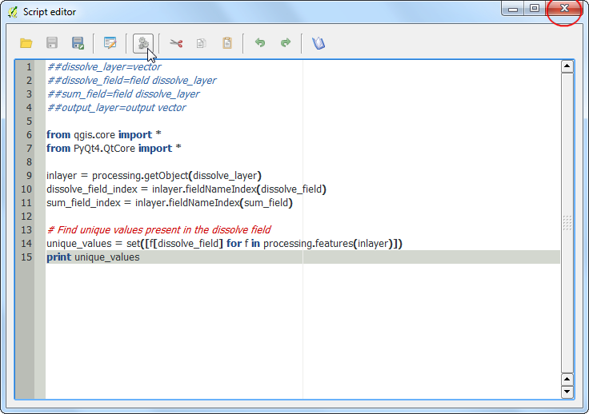
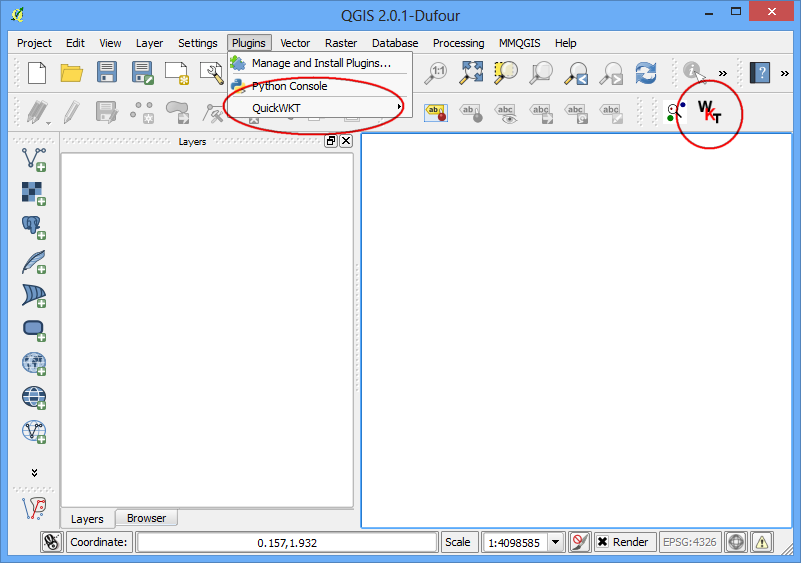
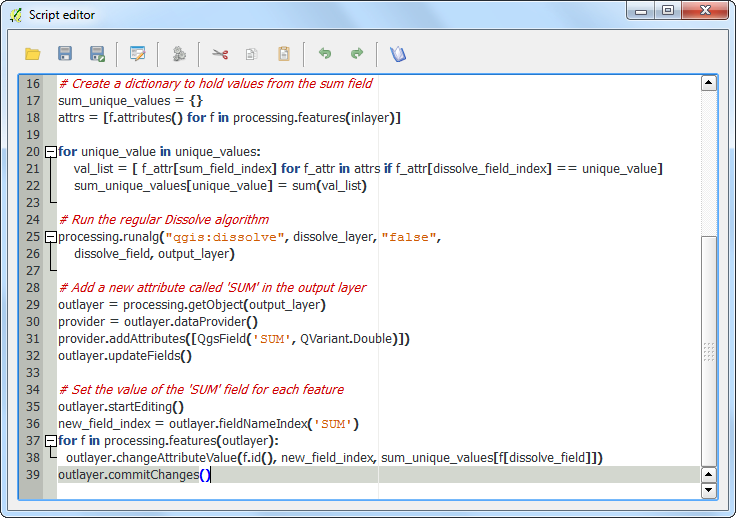

Rasters mozaieken en clippen
[ Download PDF A4 Letter ]
Deze handleiding verkent enkele basis rasterbewerkingen in QGIS zoals weergeven, mozaïeken en subinstellingen.
Overzicht van de taak
We zullen enkele publieke domein rastergegevens voor Brazilië downloaden en die bekijken in QGIS. Vervolgens zullen we deze samenvoegen in één enkele mozaïek en die clippen met behulp van de grens van een land om één naadloze gegevensset voor het land te krijgen.
Andere vaardigheden die u zult leren
Procedure
Open QGIS en ga naar .

Blader naar de map met de individuele afbeeldingen. Houd de Ctrl-toets ingedrukt en klik op de afbeeldingsbestanden om een meervoudige selectie te maken. Klik op Open.

U zult de afbeeldingen worden geladen in de inhoudsopgave in het paneel links. Laten we nu één enkele afbeelding Mosaic maken uit al deze individuele afbeeldingen. Klik op .
Notitie
Het menu Raster in QGIS komt uit een bronplug-in, genaamd GdalTools. Als u het menu Raster niet ziet, schakel dan de plug-in GdalTools in via . Zie Plug-ins gebruiken voor meer details.

Klik, in het dialoogvenster Samenvoegen, op Selecteren... naast Invoerbestanden en blader naar de map die alle individuele geotiffs bevat. Houd de Ctrl-toets ingedrukt en selecteer alle subsets. Klik nu op Selecteren... naast Uitvoerbestand en noem het uitvoerbestand Brazil_mosaic.tif. Selecteer, onder in het venster, het vak naast Na afloop in kaartvenster laden. Klik op OK.

U zult een pop-upbericht zien dat zegt Verwerking afgerond, als het mozaïek is gemaakt en geladen in het kaartvenster van QGIS. U zult zien dat de individuele afbeeldingen nu zijn gecombineerd en als mozaïek in één enkele laag. U kunt nu de individuele lagen uitschakelen door het vak ernaast te deselecteren.

Een andere rasterbewerking die u kunt uitvoeren is een subset te maken of croppen van een afbeelding. We kunnen een polygoon uit een vectorlaag gebruiken om het raster bij te snijden tot de exacte vorm. Laten we het shapefile met polygonen van landen laden dat we downloaden van Natural Earth. Ga naar .

Selecteer het zip-bestand ne_10m_admin_0_countries.zip en klik op Openen. Indien gevraagd om de laag binnen het zip-bestand te selecteren, selecteer dan ne_10m_admin_0_countries.shp.

Als de vectorlaag eenmaal is geladen, willen we de polygoon voor Brazilië selecteren en uitnemen. Selecteer het gereedschap Object(en) selecteren op de werkbalk.

Klik ergens in de polygoon van Brazilië en die zal worden geselecteerd.

Klik met rechts op de laag ne_10m_admin_0_countries en selecteer Opslaan als....

Noem uw uitvoer brazil_boundary.shp and make sure Add saved file to map box is checked. click OK.

U zult zien dat de polygoon met de grenzen van Brazilië nu wordt geladen in QGIS.

Ga nu naar .

Selecteer invoerbestand (raster) als Brazil_mosaic. Noem het Uitvoerbestand Brazil_mosaic_clipped. Kies, in het gedeelte Clipping modus, Maskeerlaag. Selecteer de nieuw gemaakte brazil_boundary als de maskeerlaag. Selecteer het vak naast Na afloop in kaartvenster laden. Klik op OK.

De nieuw gecropte laag zal worden geladen in QGIS. U zult de zwarte pixels opmerken die de actuele mozaïek omsluiten. Laten we die verwijderen. Klik met rechts op de laag Brazil_mosaic_clipped en selecteer Eigenschappen.

Ga naar de tab Transparantie en voeg 0 toe als een Aanvullende ‘no data’-waarde.

Nu heeft u een mooi mozaiek, bijgesneden tot een landsgrens die u in uw project kunt gebruiken als achtergrond of waarop u verder analyses kunt uitvoeren.